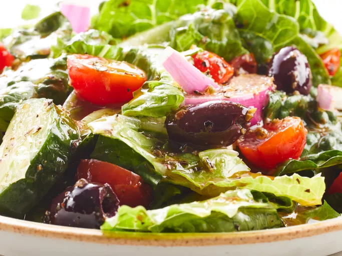

Greek Salad

Description:
This Greek salad dressing recipe is bright, fresh, and flavorful. It’s the perfect way to finish off all your favorite salads!
Ingredients:
- 1 ½ quarts olive oil
- ⅓ cup garlic powder
- ⅓ cup dried oregano
- ⅓ cup dried basil
- ¼ cup ground black pepper
- ¼ cup salt
- ¼ cup onion powder
- ¼ cup Dijon-style mustard
- 2 quarts red wine vinegar
Steps:
- Gather all ingredients.
- Mix olive oil, garlic powder, oregano, basil, pepper, salt, onion powder, and Dijon-style mustard together in a very large container. Pour in vinegar slowly while mixing vigorously until well blended. Store tightly covered at room temperature.
- Pour over salad and enjoy!